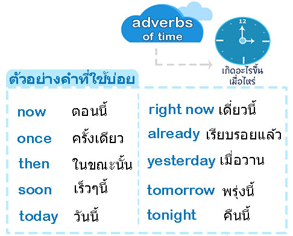

Adverb of time
Adverb of time คือคำวิเศษณ์แสดงเวลา ใช้บ่งบอกว่าเหตุการณ์นั้นเกิดขึ้นเมื่อไหร่หรือใช้เวลาการเกิดนานเท่าใดที่พบเห็นได้ทั่วไป

โดยหลักการเติมดังนี้ คือ
1.) วางที่ตำแหน่งท้ายประโยค เช่น
2.) วางไว้ที่ตำแหน่งขึ้นต้นประโยค โดยใช้ “,” ตามหลัง เช่น
3.) วางไว้ที่ตำแหน่งกลางประโยค แต่จะใช้ได้เฉพาะบางคำ now, then, once, finally, eventually, just, still และอื่นๆอีกมาก